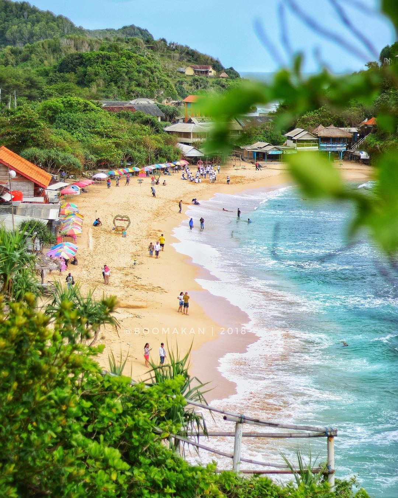

Pantai Indrayanti
Pantai Indrayanti salah satu tempat wisata pantai di Jogja yang kini sudah sangat populer di kalangan wisatawan, baik lokal maupun mancanegara. Bahkan, pantai ini seolah jadi rute wajib dari nyaris semua agen wisata saat membawa tamunya berkunjung ke DIY. Sama seperti tipikal pantai selatan di wilayah Gunungkidul, pemandangan di sini tidak kalah indahnya. Namun yang menjadi kelebihan pantai ini yaitu selain garis pantainya yang landai juga pasir pantai di sini relatif lebih bersih ketimbang pantai lainnya. Selain itu, lantaran dikelola oleh swasta, fasilitas penunjang di objek wisata ini pun jauh lebih lengkap. Mulai dari toilet, musala, kafe, restoran, hingga penginapan sudah tersedia bagi wisatawan.
Di pantai ini, wisatawan juga bisa menghabiskan waktu di pasirnya yang putih dan bersih. Semakin nyaman ditambah dengan ombak yang relatif rendah. Agar bisa sambil bersantai wisatawan bisa menyewa payung pantai dan gazebo yang banyak tersedia. Tinggal menyewa dari masyarakat sekitar pantai. Sedangkan harganya pun cukup murah. Untuk payung pantai, wisatawan bisa menyewa dengan harga Rp20.000 per unitnya, sedangkan untuk gazebo, wisatawan bisa membayar uang sewa seharga Rp30.000 per unit. Jangan dikira berwisata di pantai DIY monoton. Di pantai ini wisatawan bisa merasakan fasilitas wisata bak pantai-pantai di Bali dan Lombok, seperti misalnya mengendarai jetski di atas air. Di pantai ini, wisatawan bisa menyewa jetski dengan harga yang relatif terjangkau. Untuk pemakaian selama 15 menit, wisatawan bisa menyewa dengan harga Rp250.000.
Pantai Indrayanti berada di Dusun Ngasem, Desa Sidoharjo, Kecamatan Tepus, Gunungkidul. Untuk menuju ke pantai ini, dari Wonosari, wisatawan bisa menuju ke Kecamatan Tepus kemudian mengikuti papan penunjuk arah yang menuju ke pantai ini. Rute melalui Wonosari memang lebih direkomendasikan, lantaran lebih mudah dilalu ketimbang jalur lainnya
berikut sekilas suasana yang ada di Panntai Indrayanti
Source: Youtube